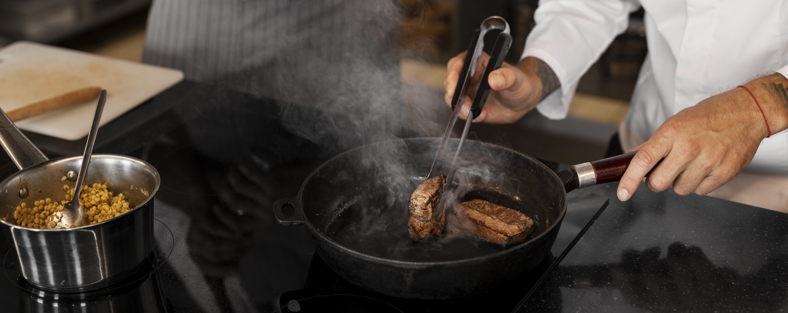

Sabor Maneiro: Uma História de Paixão e Sabor.
Em um cantinho ensolarado do Rio de Janeiro, nasceu em 2018 um restaurante que rapidamente conquistou o coração (e o paladar) dos moradores locais: o Sabor Maneiro. A ideia surgiu da mente criativa de Marcos Oliveira, um chef autodidata que cresceu ajudando sua avó na cozinha e experimentando temperos inusitados no quintal de casa. Após anos trabalhando em cozinhas de hotéis e food trucks, Marcos decidiu seguir seu sonho: abrir um restaurante que unisse comida caseira com um toque ousado e moderno. Com uma fachada simples, mas colorida, o Sabor Maneiro abriu suas portas em março de 2018 com apenas cinco mesas, um cardápio escrito à mão e um aroma de comida fresca que fazia qualquer um parar na calçada. O carro-chefe era o "Arroz Maneiro", uma releitura tropical do arroz carreteiro, com pedaços suculentos de carne de sol, queijo coalho dourado, banana da terra grelhada e um molho secreto que virou lenda na cidade. A cada semana, Marcos criava um "prato surpresa", desafiando os clientes a confiar cegamente em seu talento — e eles confiavam. Com o tempo, o boca a boca fez sua mágica. Em 2020, mesmo durante os tempos difíceis da pandemia, o Sabor Maneiro se reinventou com entregas personalizadas, lives de receitas e até uma linha de molhos artesanais criada na cozinha do próprio restaurante. Hoje, o Sabor Maneiro é mais do que um restaurante: é um ponto de encontro, um símbolo de resiliência e criatividade, e um lembrete de que comida boa é aquela que alimenta o corpo e aquece a alma. E, claro, continua com a mesma essência: sabor de casa, com um toque maneiro.